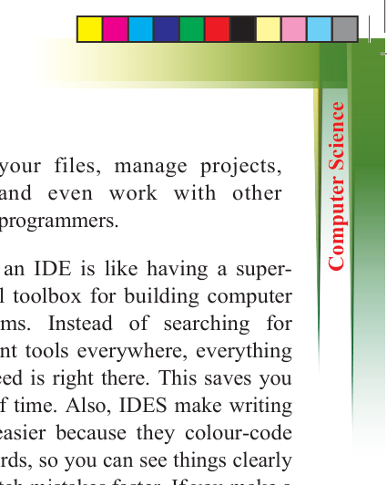
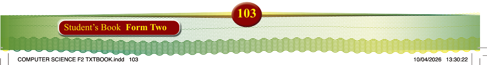

103
Student’s Book Form Two
Integrated Development Environment
(IDE): is a software that helps programmers write, test, and fix their code more easily. It combines several
tools into one platform to make coding
faster and more organised. It usually includes a code editor, a compiler or
interpreter, debugging tools, and other
features to help programmers write and
test their code more efficiently. Examples
include Visual Studio, PyCharm, and
Eclipse. An IDE usually includes:
(i) Code editor: This is where you
write your code. It makes coding
easier by highlighting important
parts, suggesting possible
completions, and making your
code look neat.
(ii) Compiler or interpreter: These tools turn the code you write into
instructions the computer can
understand and run. A compiler
does this all at once, while an
interpreter does it one line at a
time.
(iii) Debugger: This helps you find
and fix mistakes in your code.
It lets you go through your code step by step to see what is going wrong.
(iv) Build tools: These help you
automate common tasks like
checking for errors, testing your
code, or running your program,
making everything faster and
easier.
(v) Other helpful things: Some IDEs
have tools to help you organise
your files, manage projects, and even work with other
programmers.
Using an IDE is like having a super- helpful toolbox for building computer programs. Instead of searching for different tools everywhere, everything
you need is right there. This saves you
a lot of time. Also, IDES make writing
code easier because they colour-code
the words, so you can see things clearly and catch mistakes faster. If you make a mistake, the IDE has a special tool that
helps you find and fix it quickly. IDEs
help you keep everything organised and make coding much easier and faster.
Online code editors
An online code editor is a web-based tool
that allows programmers to write and run
code directly in a web browser, without
installing any software. These editors are
great for beginners, students, and people who want to code on the go.
The following are some features of on line code editors:
(i) No installation is required. You
just open the website and start
coding.
(ii) Accessible from any device with an Internet connection.
(iii) Some provide built-in collaboration features for group coding projects.
The following are some examples of
online code editors:
(i) Replit: Supports multiple programming languages, allows